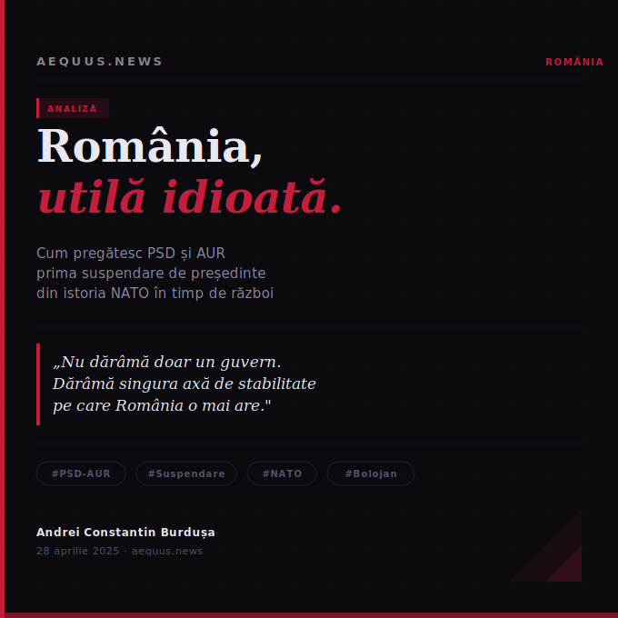

Două partide fără nimic în comun au descoperit că pot demola împreună. Nu un guvern — asta e doar primul perete. Ci singura axă de stabilitate pe care România o mai are într-un moment în care Rusia se uită atentă la orice fisură din flancul estic al Alianței.

Sabotaj instituțional metodic, consecințe geopolitice reale și o întrebare simplă: dacă mecanismul funcționează acum, ce oprește data viitoare?
Televiziunea dispare. Modelul de televiziune partizană, mai puțin sigur.
Analize militare, mize regionale și logica unui conflict care nu se va termina în curând.
De ce contează controlul traficului petrolier și cum reconfigurează criza piețele globale.
Poziția Chinei nu e neutră. E calculată cu precizie pentru un singur obiectiv.
Orbán câștigă din nou. Dar tabloul e mai complicat decât arată titlurile.
Un gest discret cu implicații structurale pentru arhitectura financiară europeană.
Ce s-a schimbat în ultimele săptămâni și ce nu s-a schimbat deloc.